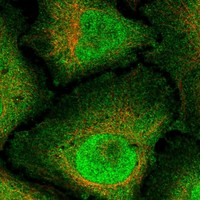
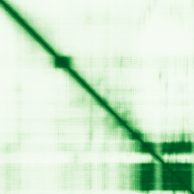
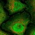

type: protein-evaluation gene: "ARK2C" date: 2026-05-31 tags: [protein-scout, nucleoplasm, evaluation] status: scored ---
ARK2C 核蛋白评估报告
1. 基本信息
| 项目 | 内容 |
|---|---|
| 基因名 / 别名 | ARK2C / RNF165 |
| 蛋白全名 | E3 ubiquitin-protein ligase ARK2C |
| 蛋白大小 | 346 aa / 39.5 kDa |
| UniProt ID | Q6ZSG1 |
2. 评分总览
| 维度 | 得分 | 新权重 | 加权后 | 关键证据摘要 |
|---|---|---|---|---|
| 核定位特异性 | 4/10 | ×4 | 16.0 | UniProt Nucleus ECO:0000250 (序列类比); GO nucleus IBA:GO_Central |
| 蛋白大小 | 6/10 | ×1 | 6.0 | 346 aa, 39.5 kDa，中等大小 |
| 研究新颖性 | 10/10 | ×5 | 50.0 | Strict=3 |
| 三维结构 | 6/10 | ×3 | 18.0 | 8 PDB X-ray 结构 (255-346 RING domain)；pLDDT 57.0 |
| 调控结构域 | 4/10 | ×2 | 8.0 | RING E3 ubiquitin ligase domain (IPR001841, IPR013083) |
| PPI 网络 | 4/10 | ×3 | 12.0 | IntAct 8 UBE2 泛素结合酶; UniProt SKI(2) |
| 加权总分 | 110/180** | |||
| 互证加分 | +0.0 | 核定位证据均为预测来源（ECO:0000250, IBA） | ||
| 归一化总分 (÷1.83) | 60.1/100** |
PubMed strict: 3
3. 详细分析
3.1 核定位证据
| 来源 | 定位 | 可信度 |
|---|---|---|
| UniProt | Nucleus (ECO:0000250) | 序列类比预测 |
| GO-CC | nucleus (IBA:GO_Central); protein-containing complex (IEA:Ensembl) | IBA 为系统发育推断 |
| HPA (IF) | 有 IF 缩略图，原图未取得 | 间接支持 |
HPA IF 状态: HPA subcellular IF 图像已重新获取并嵌入（见下方 HPA IF 图像修正块）；此前“暂无/未可靠获取 IF”的表述为采集失败导致的误报。 
结论: ARK2C 核定位证据为预测级别（序列类比），缺少实验赋值（ECO:0000269/IDA）。核定位为低置信度。
3.2 结构与结构域
| 指标 | 数值 |
|---|---|
| AlphaFold | AF-Q6ZSG1-F1 |
| 平均 pLDDT | 57.0 |
| pLDDT >90 | 18.5% |
| pLDDT 70-90 | 10.1% |
| pLDDT 50-70 | 16.8% |
| pLDDT <50 | 54.6% |
| PDB | 5D0I, 5D0K, 5D0M, 5ULH, 5ULK, 7R70, 7R71, 9N1F（均为 X-ray，1.90-2.80 A，RING domain residues 255-346） |
| InterPro | IPR045191, IPR001841 (RING finger), IPR011016 (Zinc finger RING-CH), IPR013083 (Zinc finger RING/FYVE/PHD) |
| Pfam | PF13639 |

3.3 研究现状
| 指标 | 数值 |
|---|---|
| PubMed strict (Title/Abstract) | 3 |
| PubMed broad | 6 |
| 别名 | RNF165（未用于 scoring） |
关键文献：
- PMID:23610558 — "Rnf165/Ark2C enhances BMP-Smad signaling to mediate motor axon extension" (PLoS Biol, 2013)
- PMID:33086510 — "Assessing the Direct Binding of Ark-Like E3 RING Ligases to Ubiquitin" (Molecules, 2020)
- PMID:37024974 — "The UAS thioredoxin-like domain of UBXN7 regulates E3 ubiquitin ligase activity of RNF111/Arkadia" (BMC Biol, 2023)
功能聚焦于 BMP-Smad 信号通路调控和泛素化调控。研究量极低，高度新颖。
3.4 PPI 网络（三源综合）
| Partner | Source | Score/Evidence | Relevance |
|---|---|---|---|
| UBE2D1 | IntAct | two hybrid array (PMID:19690564) | E2 ubiquitin-conjugating enzyme |
| UBE2D2 | IntAct | two hybrid array (PMID:19690564) | E2 ubiquitin-conjugating enzyme |
| UBE2D3 | IntAct | two hybrid array (PMID:19690564) | E2 ubiquitin-conjugating enzyme |
| UBE2D4 | IntAct | two hybrid array (PMID:19690564) | E2 ubiquitin-conjugating enzyme |
| UBE2E1 | IntAct | two hybrid array (PMID:19690564) | E2 ubiquitin-conjugating enzyme |
| UBE2E3 | IntAct | two hybrid array (PMID:19690564) | E2 ubiquitin-conjugating enzyme |
| UBE2N | IntAct | two hybrid array (PMID:19690564) | E2 ubiquitin-conjugating enzyme |
| UBE2W | IntAct | two hybrid array (PMID:19690564) | E2 ubiquitin-conjugating enzyme |
| SKI | UniProt | 2 experiments | E3 ligase substrate (BMP pathway) |
| — | STRING | 502 错误，无数据 | — |
STRING 查询失败（502 Bad Gateway）。IntAct 记录 8 个 UBE2 家族 E2 泛素结合酶 via two hybrid array（PMID:19690564），一致指向 E3-E2 泛素化通路。UniProt 记录 SKI 作为底物。PPI 网络局限于泛素化通路，非染色质相关。
4. 总体评价
ARK2C 是一个文献量极低（PubMed strict=3）的 E3 泛素连接酶，在 BMP-Smad 信号中调控运动神经元轴突延伸。核定位仅有序列类比/IBA 预测证据，未达到实验确认水平。8 个 PDB 结构仅覆盖 C 端 RING domain（255-346），N 端无序区 pLDDT 较低。作为 nucleoplasm 候选置信度低，建议补内源 IF 确认核定位后重新评估。
5. 数据来源
- UniProt: https://www.uniprot.org/uniprotkb/Q6ZSG1
- AlphaFold: https://alphafold.ebi.ac.uk/entry/Q6ZSG1
- PubMed: https://pubmed.ncbi.nlm.nih.gov/?term=ARK2C
- Protein Atlas: https://www.proteinatlas.org/search/ARK2C（IF 缩略图）

HPA IF 图像已本地嵌入。
<!-- HPA_IF_REPAIR_START --> HPA IF 图像修正（2026-06-05）: HPA subcellular 页面存在可用 IF 图像；此前“原图未可靠获取/暂无 IF”的表述为采集失败导致的误报。HPA 定位: Nucleoplasm (approved)。来源: https://www.proteinatlas.org/ENSG00000141622-RNF165/subcellular


<!-- DOMAIN_HUMANPPI_REPAIR_START -->
Domain/SMART 与 humanPPI 补充（2026-06-07）
SMART / UniProt domain
| Source | Data |
|---|---|
| UniProt | Q6ZSG1 |
| SMART | SM00184;SM00744; |
| UniProt Domain [FT] | 未检出显式 UniProt Domain feature |
| InterPro | IPR045191;IPR001841;IPR011016;IPR013083; |
| Pfam | PF13639; |
humanPPI / HPA Interaction
Source: https://www.proteinatlas.org/ENSG00000141622-RNF165/interaction
未从 HPA Interaction 页面解析到互作伙伴；需人工复核或使用其他 humanPPI 来源。 <!-- DOMAIN_HUMANPPI_REPAIR_END -->